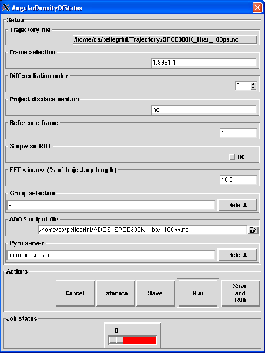
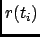
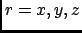
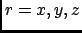

Next: Output
Up: Angular Density Of States
Previous: Theory and implementation
Contents
Parameters
Pressing the Angular Density Of States button will pop up the dialog shown on figure 4.49
Figure 4.49:
The dialog from where the ADOS analysis will be set up and run.
|

|
The following input fields controls the parameters for the ADOS analysis:
- Trajectory file
Format: string
Default: traj_file where traj_file is the name of the loaded trajectory
Description: the value of this widget can not be changed. It just recalls for information purpose the name
of the trajectory file loaded for the analysis.
- Frame selection
Format: string
Default: 1:traj_length:1 where traj_length is the number of frames of the trajectory.
Description: this widget allows to select the trajectory frames that will be used for the analysis. This must
be a string of the form:
first:last:step
where first is an integer specifying the first frame number to consider, last is an integer specifying the last
frame number to consider and step is an integer specifying the step number between two frames.
For example,
- 2:10:3 will select the frames 2, 5 and 8.
- 1:5:1 will select the frames 1, 2, 3, 4 and 5.
- Differentiation order
Format: integer in [0,5]
Default: 0 if velocities are stored in the trajectory file, 1 otherwise
Description: this widget allows to specify the order of the derivation scheme used to get the velocities out
of the coordinates. If your trajectory NetCDF file already contains the velocities then just select 0.
However, you can still decide to get the velocities out of the coordinates. In that case, nMOLDYN performs a numerical
differentiation of the input data. To do so, nMOLDYN can perform numerical differentiation from order 1 to
order 5. Using order 1, the first time derivative of each point 
is calculated as
where  is the time step.
Choosing order N with N=2,...,5, nMOLDYN calculates the first time-derivative of each point
() using the N-order polynomial interpolating the N+1 points across , where
belongs to this set [52].
is the time step.
Choosing order N with N=2,...,5, nMOLDYN calculates the first time-derivative of each point
() using the N-order polynomial interpolating the N+1 points across , where
belongs to this set [52].
- Project displacement on
Format: string
Default: no
Description: this widget allows to specify a vector along which the ADOS will be computed. This vector does not
need to be normalized as nMOLDYN will perform the normalization when processing it. The entered value must have the
following format:
vx:vy:vz
where vx, vy and vz are floats that represent respectively the x, y and z coordinates of the vector.
- Reference frame
Format: integer in [1,traj_length] where traj_length is the number of frames of the input trajectory
Default: 1
Description: this widget allows to specify which frame should be the reference for the ADOS analysis.
The value entered should be an integer ranging from 1 to traj_length where traj_length is the
number of rames of the input trajectory.
- Stepwise RBT
Format: string equal to yes or no
Default: no
Description: if set to yes, each frame f will serve as the reference for the frame f+1
when defining the RBT canceling the value entred in Reference frame entry.
- FFT window
Format: float in [0.0,100.0]
Default: 10.0
Description: this widget allows to define the width in percentage of the trajectory length of the Gaussian
function to be used in the smoothing procedure for the calculation of the ADOS. See Appendix A for more details.
- Group selection
Format: group selection string
Default: all
Description: this widget allows the selection of the groups of atoms that will be defined as rigid-bodies
when performing the ADOS. See Section 4.2.2.3 for more details.
- ADOS output file
Format: string
Default: ADOS_traj_file.nc where traj_file.nc is the name of the input trajectory
Description: this widget allows to enter the name of the NetCDF output file of the ADOS analysis. A CDL
version of the NetCDF output file is also automatically created with ADOS_traj_file.cdl name.
Next: Output
Up: Angular Density Of States
Previous: Theory and implementation
Contents
pellegrini eric
2009-10-06